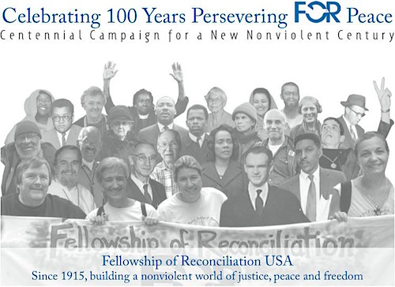
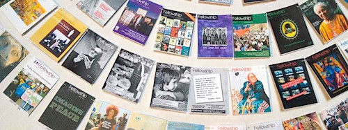
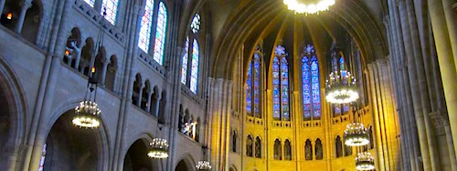
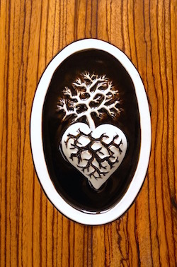

Friends,
Join Fellowship of Reconciliation USA for our 100th Anniversary Celebrations!
Our Centennial Planning Committee and FOR staff have been hard at work creating opportunities for the FOR community to gather to celebrate a century of persevering for peace.
Please save the following dates and plan to join us!
Thursday, November 5th

Centennial Exhibit & Reception, 6:00 to 8:00 PM
Union Theological Seminary, New York, NY
An opening reception for the unveiling of a Centennial Exhibit in the St. James Chapel of the Union Theological Seminary will kick off a weekend of festivities. Images from over a thousand Fellowship and The World Tomorrow magazines, as well as other FOR publications and our extensive photo archives, will graphically and poetically depict FOR-USA’s rich 100-year history on the walls of this neo-gothic chapel and provide a foundation for our celebrations in the stories of our community.
The event is free and open to the public, and will be on display throughout the month of November.
Friday, November 6th
Centennial Film Premiere, 5:00 to 7:00 PM
Shadowcliff, Nyack, NY
All are welcome to attend a wine and cheese reception at FOR-USA’s national headquarters and view the premier of FOR’s Centennial Film. A labor of love by renowned filmmakers Nancy Savoca and Rich Guay with the support of FOR staff, this film is a compilation of interviews with FOR notables, archival footage and photographs, and captures the highlights of 100 years of groundbreaking efforts for peace and justice in about thirty minutes.
The evening also offers an opportunity to visit Shadowcliff the stately mansion that has been home base for staff and refuge for peace workers for more than fifty years. Come enjoy the view of the mighty Hudson River too!
Saturday, November 7th

Multifaith Service, 3:00 to 4:15 PM
Riverside Church, New York, NY
All are invited to gather for spiritual centering in honor of the various faith traditions that are the fabric of the Fellowship of Reconciliation. The service will feature performances from three talented musicians: Lisa Sokolov, Naaz Hosseini, and Guy Davis.
Reception & Silent Auction, 5:30 to 7:00PM
Riverside Church, New York, NY
|

An auction item by Laurie Childers.
|
The Reception between the Multi-faith Service and the Centennial Dinner offers an opportunity for guests to enjoy being together in a place of great historical importance to FOR and the greater peace movement. Riverside Church is the site of Martin Luther King Jr.’s “Beyond Vietnam” speech penned by Honorary Committee member Dr. Vincent Harding. Wine/beer and hors d’oeuvres will be available as guests relax, converse, and peruse auction items, including artwork by FOR members, activist vacation packages, books by faith leaders working for peace, and more.
RSVP for your Centennial Reception ticket online.
Centennial Dinner, 7:00 to 9:30PM
Riverside Church, New York, NY
Break bread with FOR’s Honorary Committee members, 2015 Peace Award recipients, and other cornerstones of the FOR community in celebration of persevering for peace! Dinner guests will enjoy musical performances by Bethany Yarrow, Rufus Cappadocia, and Joanne Shenandoah and get a sneak peak of the FOR documentary trailer while enjoying a delicious meal provided by Soleil Caterers. The Centennial Dinner is a time for community fellowship and the establishing of a financial foundation on which FOR can move into a new century!
RSVP for your Centennial Reception & Dinner tickets online.
FOR USA is grateful to Union Theological Seminary, Riverside Church, Pension Parameters and Peter & Martha DiGiovanni for their sponsorship of our opening Centennial events.
July 1 to 4, 2016
FOR National Conference
Seabeck Conference Center, Seabeck, WA
The Centennial celebrations will close with a national conference in partnership with the annual Western Washington FOR & Oregon FOR gathering held at the Seabeck Conference Center near Seattle. Keynote speakers will be Erica Chenoweth and Jamila Raqib, two of the world's foremost researchers in how the use of nonviolence is far more effective than violence when it comes to social and political change. The conference will have a special focus on young adults and looking to the future. For more info and to stay connected with conference updates, please follow our Facebook page.
These events are opportunities for members of FOR to gather in the spirit of celebration and setting a spiritual, financial, and communal foundation for our next century of work, both are in critical need of your participation.
Information regarding other opportunities for engagement and sponsorship, housing for those traveling from out of town, and more is available on our website or via Jonette O’Kelley Miller (jomiller@forusa.org) and Gretchen Honnold (ghonnold@forusa.org).
Meanwhile, please save the dates and plan to join the celebrations in order to contribute to the sustainability of this community of peace! |